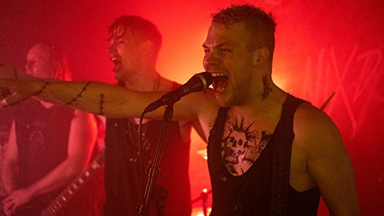

#12310 Tatort - Tschiller 6 - Tschill Out
 
 IMDB-Wertung: 5.9 / 10
IMDB-Wertung: 5.9 / 10  Metascore: 0
Metascore: 0 
Gümer asks the suspended Nick for help in protecting a leniency worker in a drug lawsuit. His brother, also a witness, has already been murdered. Apparently the drug dealers have an informant with the police. Yalcin tries to unmask it.
zu X:\5-Pentalogie(A-Z)\Tatort Tschiller - bzw zu 6-teiler alles zusammen kopieren
Jahr: 2020
Dauer: 88 Minuten
FSK:
Land: West-Deutschland Studio: ARDTonspuren:
Untertitel:
Auflösung: 720p (1280x720) Größe: 2211 MB
Genre: Thriller, Drama, Krimi
Regisseur: Eoin Moore
Drehbuch: Eoin Moore, Anika Wangard
Soundtrack: Wolfgang Glum, Kai-Uwe Kohlschmidt, Warner Poland
Darsteller:
Datei: Gemischt-01+AnimeG:\xxCOLLECTION\Tatort - Tschiller 6 - Tschill Out (2020, FSK, 1280x720).mkv seit 12.01.2020
 Alle Filme aus Gruppe 'Gemischt-01+AnimeG:\xxCOLLECTION'
Alle Filme aus Gruppe 'Gemischt-01+AnimeG:\xxCOLLECTION'